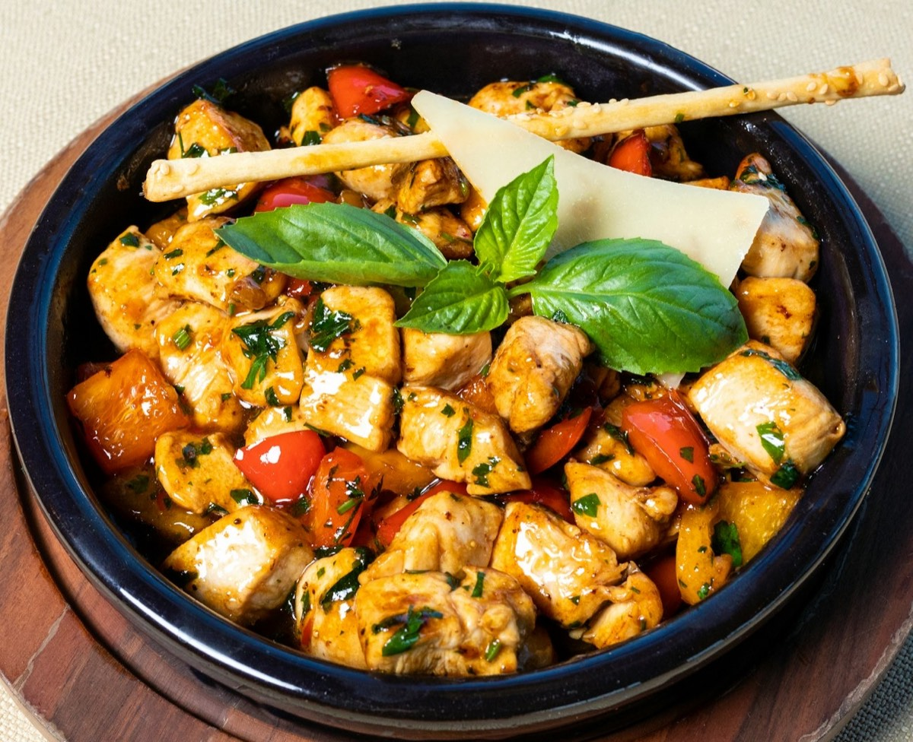

Quoi manger pour perdre du ventre (homme) : le plan alimentaire qui fonctionne

Tu peux faire de la musculation 4 fois par semaine. Tu peux marcher tous les jours. Mais si tu ne sais pas quoi manger pour perdre du ventre, en tant qu'homme, ton ventre ne bougera pas. L'alimentation, c'est 70 à 80 % du résultat. Le reste, c'est l'entraînement. Dans cet article, on voit exactement quoi mettre dans ton assiette — sans régime extrême, basé sur la science de l'insuline vue dans le premier article de ce silo.
Le principe de base : contrôler ton insuline
Si tu n'as pas lu le premier article, voilà ce qu'il faut retenir. L'insuline est l'hormone qui décide si ton corps stocke ou brûle de la graisse. Quand ton insuline est haute, ton corps stocke. Quand elle est basse, ton corps brûle. Et ce que tu manges détermine directement ton niveau d'insuline.
Les aliments qui font monter l'insuline rapidement sont tes ennemis. Ceux qui la maintiennent stable sont tes alliés.
Ce qu'il faut éliminer en priorité
Le sucre ajouté
Le premier coupable. Il fait grimper ton insuline en flèche et crée une vraie addiction. Sodas, jus industriels, bonbons, gâteaux, pain blanc : tout ça pousse ton corps à stocker du gras.
Les aliments ultra-transformés
Sucre caché, sel en excès, graisses de mauvaise qualité. Ils font monter ton insuline et ne te rassasient pas : tu en manges plus sans t'en rendre compte.
L'alcool
Traité comme une toxine par ton corps. Pendant qu'il l'élimine, la combustion des graisses s'arrête complètement. En plus, il stimule l'appétit et les mauvais choix.
Ce qu'il faut mettre dans son assiette
Les protéines en priorité
L'aliment n°1 pour perdre du ventre. Elles rassasient, préservent ton muscle et coûtent de l'énergie à digérer. Vise 1,6 à 2 g par kilo de poids de corps.
Les glucides intelligents
Pas tous mauvais : ce qui compte, c'est leur impact sur l'insuline. Préfère ceux qui font monter la glycémie lentement.
Les bonnes graisses
Les graisses ne font pas grossir, le sucre oui. Elles stabilisent l'insuline, rassasient et soutiennent la production de testostérone.
Les légumes à volonté
Riches en fibres, ils ralentissent l'absorption du sucre et limitent la sécrétion d'insuline. À chaque repas, sans te limiter.

Un exemple de journée pour perdre du ventre
Simple. Pas cher. Efficace.
L'importance de l'espacement des repas
Comme on l'a vu dans le premier article, si tu manges toutes les deux heures, ton insuline ne redescend jamais assez bas pour que ton corps brûle ses réserves. Espace tes repas : au minimum 4 à 5 heures entre chaque. Pendant ces périodes, ton insuline baisse, ton corps puise dans ses réserves, et tu perds du gras. Tu n'as pas besoin de manger 6 fois par jour — c'est un mythe. Trois repas bien construits suffisent largement.
L'hydratation
Boire suffisamment d'eau est essentiel : ça aide à éliminer les toxines, améliore la digestion, réduit la rétention d'eau et limite les fausses sensations de faim. Vise au minimum 2 litres par jour, et commence ta journée par un grand verre d'eau avant même de manger.
Ce que tu dois retenir
- Coupe le sucre ajouté
- Des protéines à chaque repas
- Choisis des glucides à faible impact glycémique
- Ajoute de bonnes graisses
- Des légumes à volonté
- Espace tes repas (4 à 5 h)
- Bois au moins 2 litres d'eau par jour
Ce n'est pas un régime. C'est une façon de manger qui respecte le fonctionnement de ton corps et maintient ton insuline à un niveau favorable à la perte de graisse.

Trouve ton archétype corporel
30 secondes pour connaître ton type de corps et ton plan sur-mesure.
Faire le test →